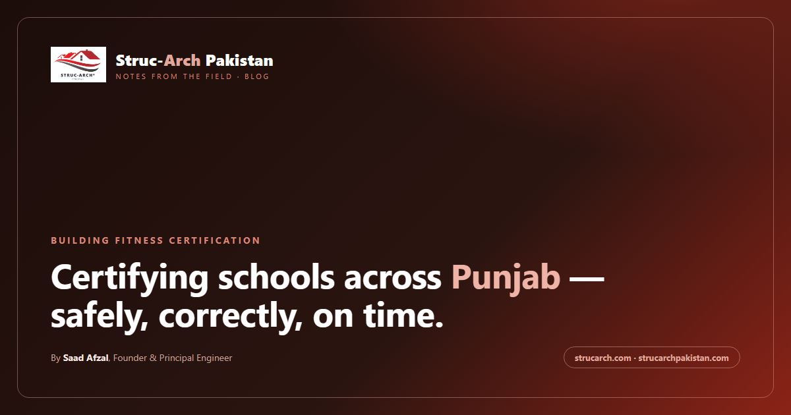

Gwadar is the deep-sea port city of the China-Pakistan Economic Corridor, with major housing and commercial development underway.
Struc-Arch is a PEC-registered civil and structural engineering consultancy (firm licence #Consult/2452; principal engineer Saad Afzal, PEC #Civil/32786, PMP, LEED Green Associate). The team also includes qualified architects, so in Gwadar you get architectural design, house planning and structural engineering from one office instead of coordinating several vendors. We serve Gwadar, Balochistan and all of Pakistan - see the Gwadar services page for the local details.
Structural engineers in Gwadar
A structural engineer is the professional who makes sure a building stands. In Gwadar that means designing foundations for the local soil, sizing columns and beams for the real loads, and producing GFC (good for construction) drawings a contractor can actually build from. Typical projects we handle in Gwadar include housing schemes, commercial buildings, apartment blocks, institutional facilities.
Fast-paced corridor development needs designs that satisfy both local and corridor program requirements.
- housing scheme design
- commercial structures
- CPEC-adjacent buildings
- port-related facilities
Architects and civil engineers in Gwadar
Architects turn your needs into a building - layouts, elevations, facades and planning. Civil engineers make it buildable - site works, quantities, supervision and the documentation that keeps a project on budget and on record. Because Struc-Arch carries architects and civil engineers alongside structural engineers in one team, your project does not get lost between consultants.
Building control and approvals in Gwadar
Building control in Gwadar is administered by Gwadar Development Authority. We prepare design, structural and certification documents that satisfy the applicable authority, so your approvals file is complete before submission.
The service package
- Structural design & GFC drawings for houses, plazas, factories and institutional buildings - sized for local soils and loads, drawn to satisfy the local approval process.
- Architectural design and house planning by the in-house architect team - layouts, facades, elevation and planning that a structural design can then be built on.
- BOQ preparation and cost estimation using current market rates in the region.
- Contractor billing & interim payment certificates (IPCs) for contractors on government and private works.
- Building fitness certification for schools and buildings, including DRA file preparation and SIS application support.
- Claims, variation and extension-of-time (EOT) support with rate analysis.
- Construction supervision and project management with regular site reporting.
For pricing and scope details, see our products and packages, or the detailed pages for structural engineering, building fitness certification and contractor billing & IPC.
How to start a project in Gwadar
Call 0310 3330023 or send a message through the contact page. We will review your plan, tell you exactly what your project needs and give a fixed quotation - no hidden charges. For nearby towns, see the Gwadar district page and other region guides.
Who is the best structural engineer in Gwadar?
Struc-Arch is a PEC-registered civil and structural engineering consultancy (firm licence #Consult/2452, principal engineer Saad Afzal PEC #Civil/32786) serving Gwadar, Balochistan and all of Pakistan. The team combines structural design, architectural design, estimation, billing and certification under one roof, with 2,000+ buildings delivered across the country.
Do you provide architectural design in Gwadar?
Yes. Struc-Arch's team includes qualified architects who work alongside PEC-registered structural and civil engineers, so architectural design, house planning and naqsha drawings are prepared together with the structural design in one office.
Do you provide house structural design and GFC drawings (naqsha) in Gwadar?
Yes. Struc-Arch prepares structural design and GFC drawings for houses, shops, plazas and factories in Gwadar - the engineering behind a complete house naqsha - sized for local soils and loads and drawn to satisfy the Gwadar Development Authority approval process.
Do you provide structural engineering services in Gwadar?
Yes. Struc-Arch is a PEC-registered civil and structural engineering consultancy (firm licence #Consult/2452, principal engineer #Civil/32786) serving Gwadar, Balochistan and all of Pakistan. We provide structural design, BOQ and cost estimation, quantity surveying, contractor billing, building fitness certification and supervision for projects in the city.
Can you help contractors in Gwadar with running bills and IPCs?
Yes. Struc-Arch prepares measurement sheets, running bills and Interim Payment Certificates (IPCs) for contractors working on government and private projects across Pakistan, including market-rate data relevant to the region.
Do you provide building fitness certification for schools in Gwadar?
Yes. Struc-Arch has certified 1,588 school structures across Pakistan, including structural and hygienic fitness certification, DRA file preparation and support with the School Information System (SIS) application - available for schools in Gwadar and the surrounding district.
How does Struc-Arch work with clients in Gwadar?
We combine remote design and documentation with scheduled site visits for inspection, supervision and certification. Call 0310 3330023 or use the contact form and we will outline the scope and fixed pricing for your project.